The Umbrella Academy !
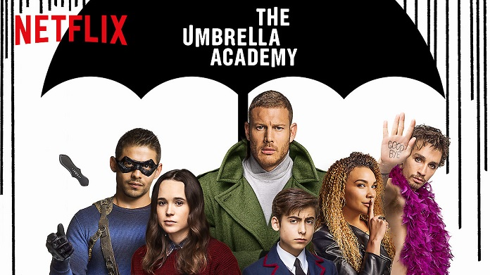
SINOPSE
Antes de falecer, o milionário Sir Reginald Hargreeves adotou sete crianças a fim de treiná-las para combater o mal. Depois que ele morre misteriosamente, esses jovens habilidosos unem suas forças para seguir o caminho para o qual seu pai adotivo os criou e acabam se envolvendo em um mundo muito mais perigoso do que eles imaginavam ser possível.
Antes de falecer, o milionário Sir Reginald Hargreeves adotou sete crianças a fim de treiná-las para combater o mal. Depois que ele morre misteriosamente, esses jovens habilidosos unem suas forças para seguir o caminho para o qual seu pai adotivo os criou e acabam se envolvendo em um mundo muito mais perigoso do que eles imaginavam ser possível.
SOBRE
The Umbrella Academy é uma série de HQ's escrita por Gerard Way e ilustrada por Gabriel Bá, vencedora do Eisner Award de "Melhor Minissérie" em 2008. O enredo acompanha um grupo de seis crianças dotadas de super-poderes, que foram adotadas por um milionário e criadas como super-heróis.Anos depois de sua primeira aventura, quando as crianças enfrentaram uma enlouquecida Torre Eiffel, a equipe se separou e um fato obrigará essa família a se reunir.
The Umbrella Academy é uma série de HQ's escrita por Gerard Way e ilustrada por Gabriel Bá, vencedora do Eisner Award de "Melhor Minissérie" em 2008. O enredo acompanha um grupo de seis crianças dotadas de super-poderes, que foram adotadas por um milionário e criadas como super-heróis.Anos depois de sua primeira aventura, quando as crianças enfrentaram uma enlouquecida Torre Eiffel, a equipe se separou e um fato obrigará essa família a se reunir.
PERSONAGENS
A academia é liderada por "O Monóculo" (Sir Reginald Hargreeves), um alienígena disfarçado . Ele adotou os membros da Umbrella Academy no nascimento que inclui Número 1 (Luther Hargreeves), Número 2 (Diego Hargreeves), Número 3 (Allison Hargreeves) , Número 4 (Klaus Hargreeves), Número Cinco (The Boy), Número 6 ( Ben Hargreeves), e Número 7 (Vanya Hargreeves)
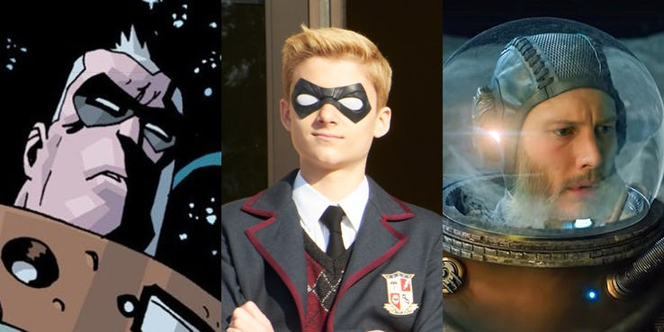
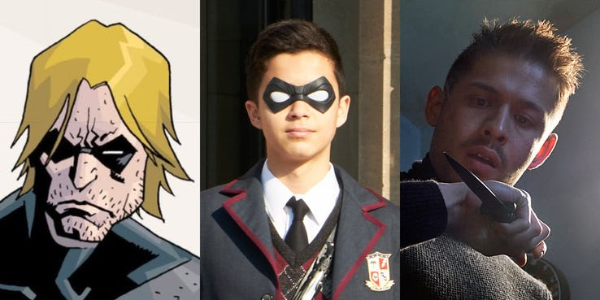
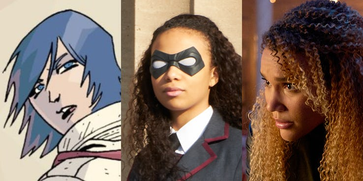
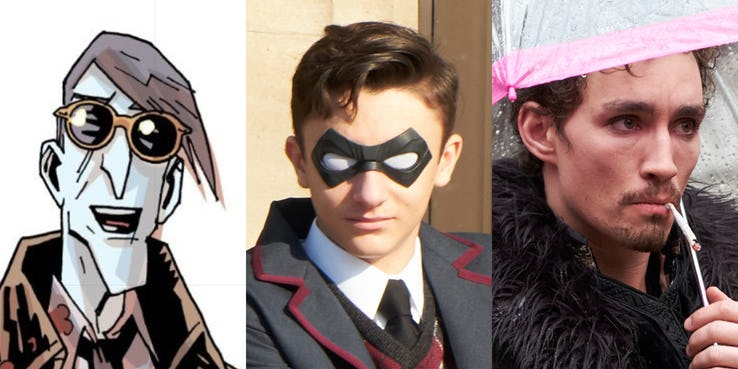
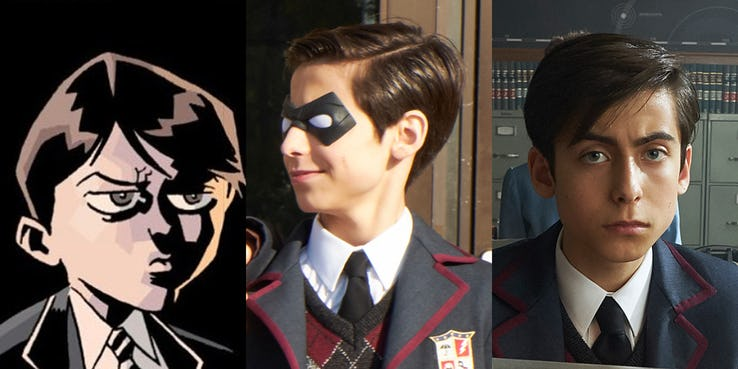
 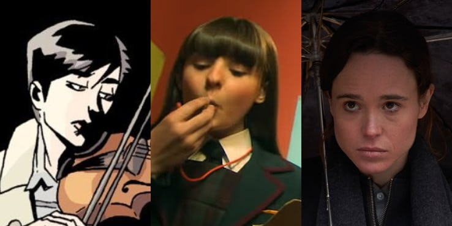
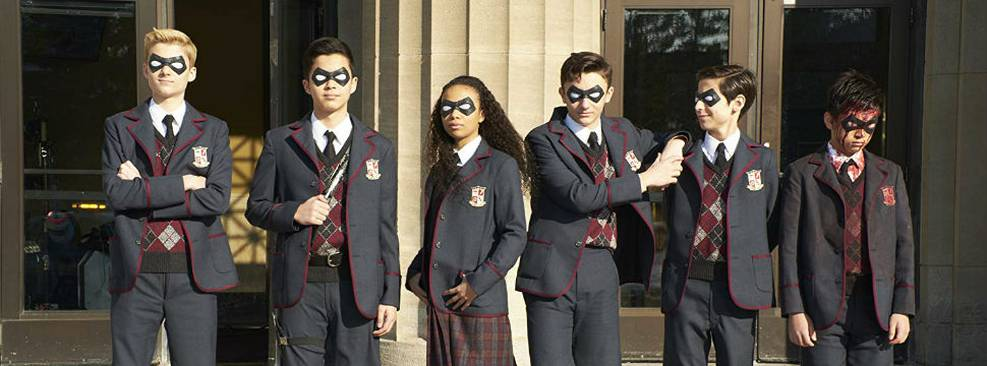
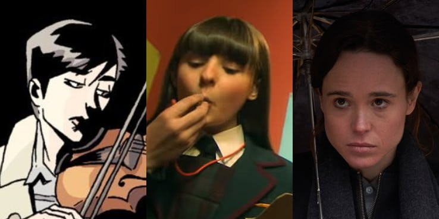
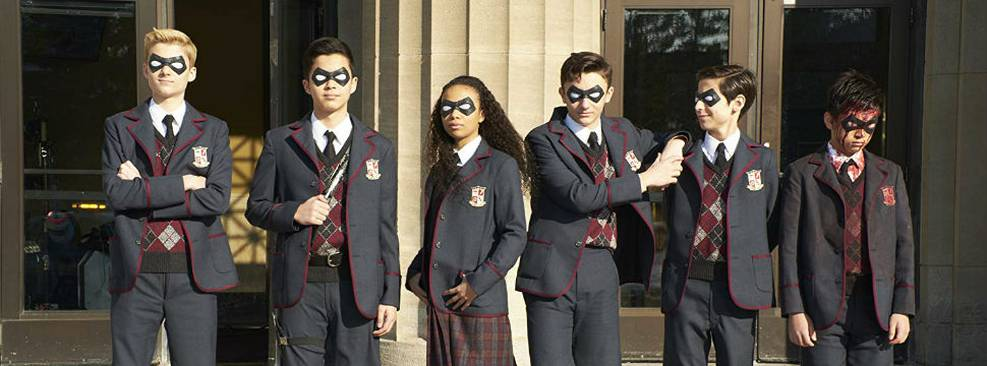
A academia é liderada por "O Monóculo" (Sir Reginald Hargreeves), um alienígena disfarçado . Ele adotou os membros da Umbrella Academy no nascimento que inclui Número 1 (Luther Hargreeves), Número 2 (Diego Hargreeves), Número 3 (Allison Hargreeves) , Número 4 (Klaus Hargreeves), Número Cinco (The Boy), Número 6 ( Ben Hargreeves), e Número 7 (Vanya Hargreeves)
Número 1
Número 2
Número 3
Número 4
Número 5
Número 6
Número 7
Todos Juntos
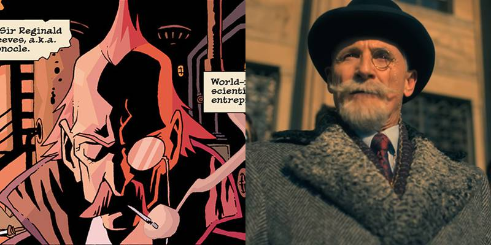
Sir Reginald Hargreeves
é um alienígena disfarçado que mudou a humanidade com grandes
invenções científicas. Além de medalhista olímpico é vencedor do
Prêmio Nobel por seu trabalho de aperfeiçoamento cerebral de
chimpanzés. Já adulto, O Monóculo saiu em busca de crianças que
nasceram de forma inexplicável e com elas quais formou a equipe
Umbrella Academy para salvar o mundo (mesmo que ele próprio não
soubesse exatamente de que). Hargreeves é lembrado como um pai
terrível, causando mágoa em boa parte da equipe. Na série o
personagem é interpretado por Colm Feore.
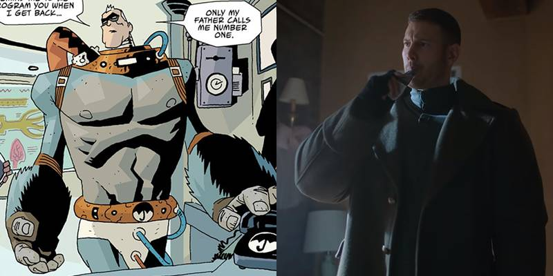
SPACEBOY/LUTHER/NÚMERO 1
é o líder da equipe criada pelo Sr Monóculo. Ele conta
com super-força e, desde de pequeno, sonha em viajar para o
espaço. Apesar de ter se tornado o primeiro garoto a ir para
o espaço, ele sofre um acidente que destrói seu corpo e, por
isso, acaba acoplado a um corpo de gorila. Ele é o único que
não esconde a admiração pelo “pai” e após a separação do time
acaba morando na lua sozinho para evitar um eventual ataque à
Terra. Na série o personagem é interpretado por Tom Hopper.
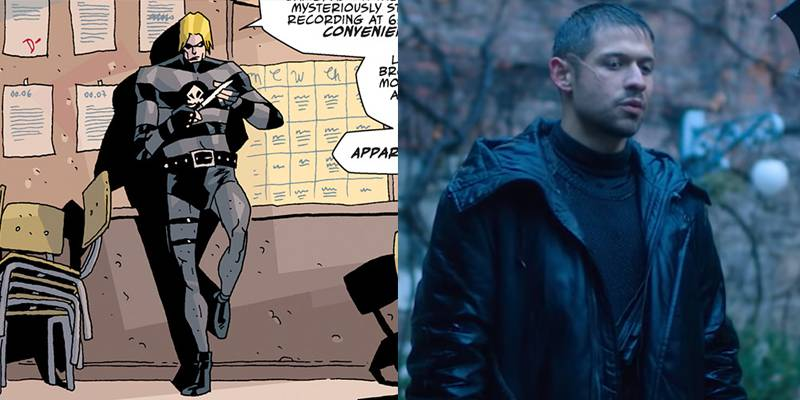
KRAKEN/DIEGO/NÚMERO 2
é uma espécie de Batman no universo de Umbrella Academy.
Sombrio e sempre preparado para qualquer adversidade, Diego
consegue segurar o ar embaixo d’água por um longo período e tem
uma grande habilidade com facas. Embora tenha boa relação com
Inspetor Lupo, o chefe de polícia da cidade, o Número 2 é o mais
rebelde do grupo e tem sérios problemas com Spaceboy. Após o fim
do grupo, ele virou uma espécie de vigilante, sempre pronto para
impedir a criminalidade. Na série o personagem é interpretado por
David Castañeda.
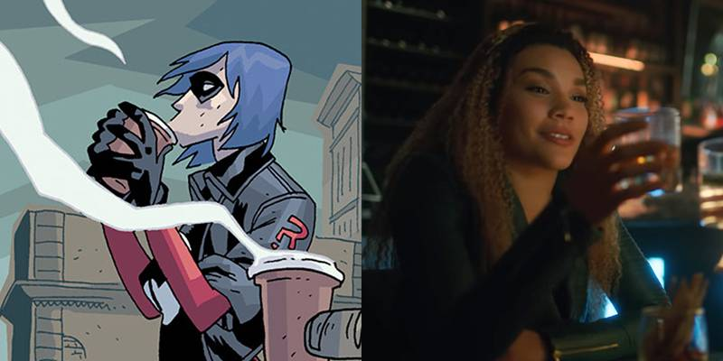
RUMOR/ALLISON/NÚMERO 3
tem a capacidade de alterar a realidade ao mentir.
Depois de sair da Umbrella Academy, ela casou com seu namorado,
Patrick, e teve uma filha chamada Claire. Contudo, eventualmente
ela se divorciou e seu ex-marido ficou com a custódia de sua
filha. Ela e Spaceboy vivem um amor mal resolvido e a garota
tem uma mão cibernética – uma vez que a original foi devorada
pelo grande rival da equipe, o Dr. Terminal. Na série a
personagem é interpretada por Emmy Raver-Lampman.
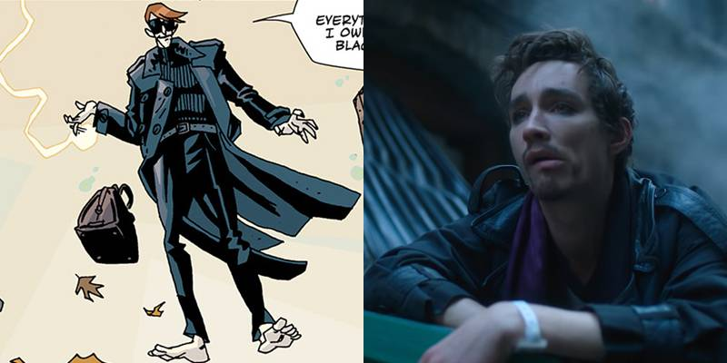
SÉANCE/KLAUS/NÚMERO 4
é capaz de conversar com os mortos e ainda conta com
poderes como a capacidade de levitar e telecinese – um poder
que nem ele mesmo sabe a extensão. Acredita-se que, por conta
de sua ligação com o outro mundo, ele é incapaz de morrer –
o que o tornou um viciado em drogas. Na série o personagem
é interpretado por Robert Sheehan.
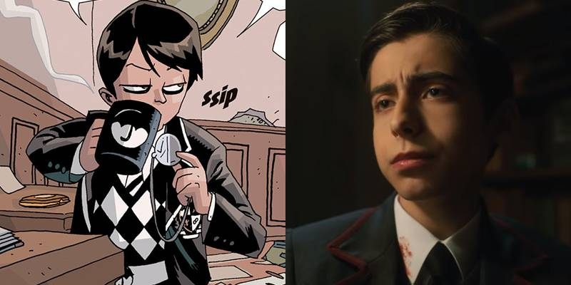
O GAROTO/NÚMERO 5
tem a capacidade de viajar no tempo e, aos 10 anos,
desapareceu pois decidiu fugir de casa indo para o futuro –
apesar de Hargreeves ter alertado o jovem que ele seria
incapaz de voltar ao passado. Mais de 50 anos se passaram
até que ele descobrisse como voltar no tempo, quando já
era um senhor de 60 anos de idade. Ele cai na época em que
seus irmãos adotivos estão com 30 anos, mas uma anomalia no
tempo fez com que ele ficasse preso em um corpo de 10 anos.
Na série o personagem é interpretado por Aidan Gallagher.
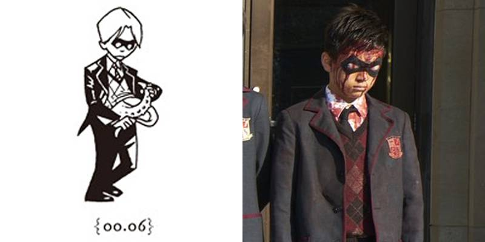
HORROR/BEN/NÚMERO 6
Quando a história do grupo adulto começa, Horror já está morto. Ele contava com monstros de outra dimensão sob sua pele e acabou morrendo durante uma missão, óbito que assombra Spaceboy até os dias atuais. Na entrada da Umbrella Academy há uma estátua em sua homenagem. Na série é interpretado por Justin H. Min.
Quando a história do grupo adulto começa, Horror já está morto. Ele contava com monstros de outra dimensão sob sua pele e acabou morrendo durante uma missão, óbito que assombra Spaceboy até os dias atuais. Na entrada da Umbrella Academy há uma estátua em sua homenagem. Na série é interpretado por Justin H. Min.
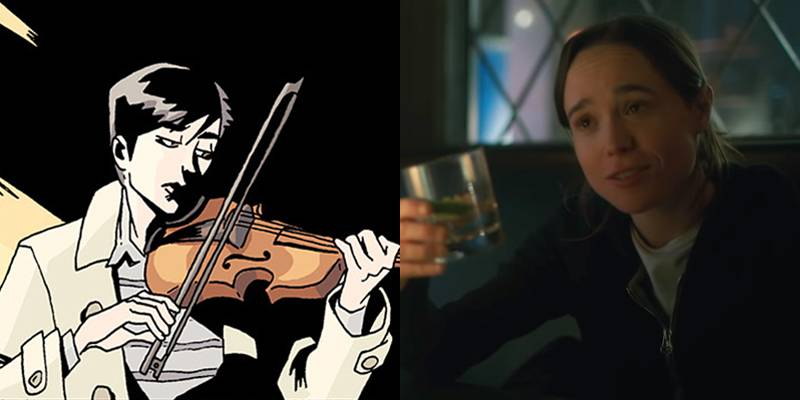
NÚMERO 7/VANYA
inicialmente não conta com poderes e é constantemente
humilhada por Hargreeves – que a impede de lutar ao lado de
seus irmãos. Ela é conhecida por ter escrito um livro detalhando
sua vida com a Umbrella Academy, algo que causou ira em alguns
de seus irmãos adotivos. A garota tem grande habilidade no
violino e, no dia em que conhece o Condutor, verá sua vida se
transformar. Na série a personagem é interpretada por Ellen Page.
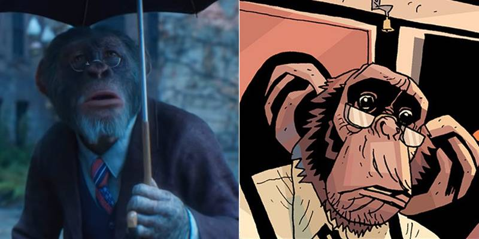
POGO
Phinneus Pogo foi um dos chimpanzés alterados geneticamente pelo Monóculo, que o manteve como parte da família. Pogo já trabalhava para Hargreeves quando as crianças foram adotadas, servindo como babá e figura paterna para muitos deles. Na série o personagem é interpretado por Adam Godley por captura de movimentos.
Phinneus Pogo foi um dos chimpanzés alterados geneticamente pelo Monóculo, que o manteve como parte da família. Pogo já trabalhava para Hargreeves quando as crianças foram adotadas, servindo como babá e figura paterna para muitos deles. Na série o personagem é interpretado por Adam Godley por captura de movimentos.
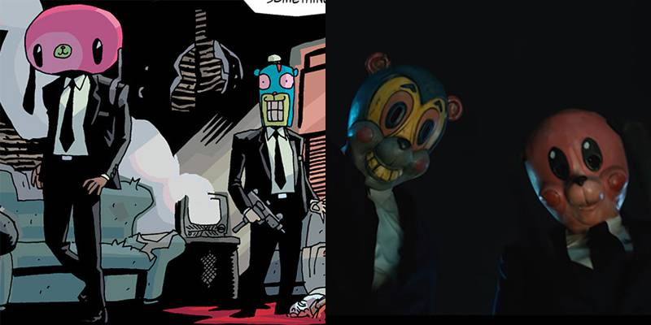
HAZEL E CHA-CHA
No universo de Umbrella Academy existe uma agência chamada Temps Aeternalis que controla a preservação da cronologia do espaço-tempo. Para garantir que tudo continue da forma como deve ser, a iniciativa contrata agentes para consertar desvios à qualquer preço. Apesar de sua aparência divertida, Hazel e Cha-Cha são os mais sanguinários empregados e são enviados ao presente em uma missão que cruza com os caminhos da família super-heróica. Na série os personagens são interpretados por Cameron Britton (Hazel) e Mary J. Blige (Cha-Cha).
No universo de Umbrella Academy existe uma agência chamada Temps Aeternalis que controla a preservação da cronologia do espaço-tempo. Para garantir que tudo continue da forma como deve ser, a iniciativa contrata agentes para consertar desvios à qualquer preço. Apesar de sua aparência divertida, Hazel e Cha-Cha são os mais sanguinários empregados e são enviados ao presente em uma missão que cruza com os caminhos da família super-heróica. Na série os personagens são interpretados por Cameron Britton (Hazel) e Mary J. Blige (Cha-Cha).